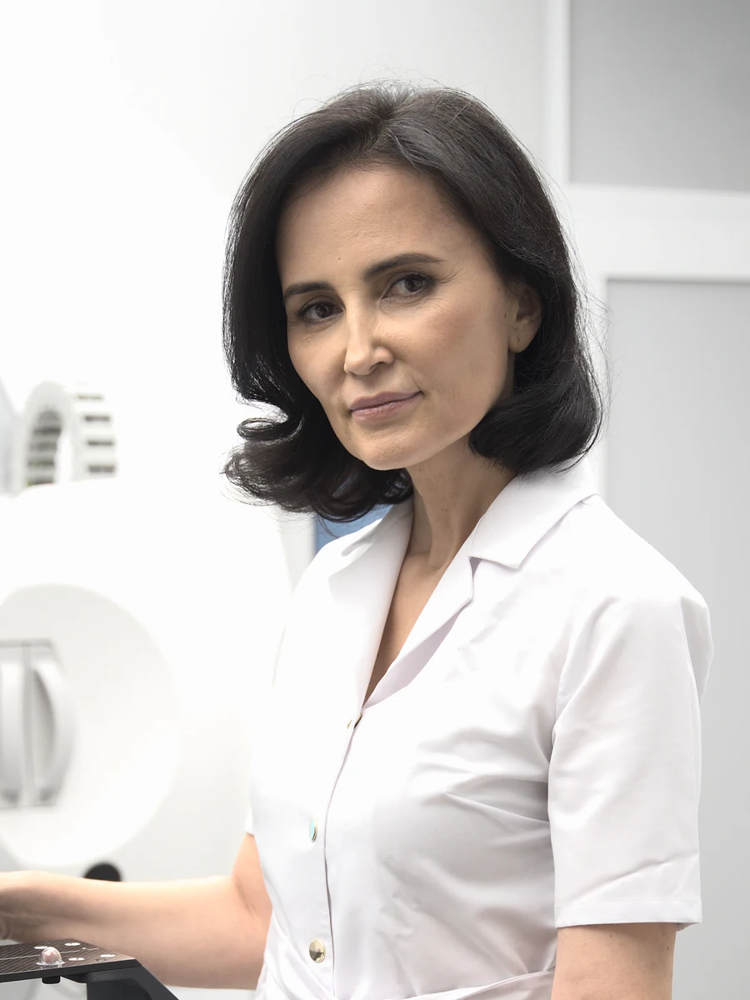

Despre mine
Medicina, văzută întâi acasă
Sunt medic primar radioterapie, doctor în medicină și conduc Secția de Radioterapie a Spitalului OncoFort. Cred că fiecare pacient are dreptul să înțeleagă exact ce se întâmplă cu el.

Medic primar
Grad profesional în specialitatea radioterapie
Doctor în Medicină
Facultatea de Medicină „Carol Davila”, București
Șef de secție
Radioterapie, Spitalul OncoFort, parte din GRAL Medical
ESTRO, ESMO, ASTRO
Membră a societăților europene și americane de radioterapie și oncologie
De unde am pornit
Un vis din adolescență
Am vrut să fiu medic încă din adolescență. Primul model profesional l-am avut acasă: mama a fost asistentă medicală în Secția de Cardiologie a Spitalului Județean de Urgență Piatra Neamț.
„Mama își iubea efectiv meseria, iar pentru mine pasiunea pe care am văzut-o la ea a fost, cu siguranță, primul și cel mai important motiv.”
Am crescut văzând ce înseamnă să ai grijă de oameni bolnavi, zi de zi, și ce diferență face atenția pe care le-o acorzi.
De ce radioterapia
Două motive, amândouă la fel de puternice
Primul ține de specialitate. Am fost atrasă de oncologie, iar radioterapia mi s-a părut una dintre cele mai dinamice specialități: stă permanent la intersecția dintre medicină, tehnologie și progresul științific, și se schimbă de la an la an.
Al doilea ține de oameni.
„Am văzut ce impact teribil poate avea diagnosticul de cancer asupra vieții pacienților și a familiilor acestora.”
Și am vrut să fiu parte din soluție.
Cum lucrez
Ascult întâi, explic după
Partea tehnică a radioterapiei este esențială, dar nu e suficientă. Un plan de tratament bine făcut, pe care pacientul nu îl înțelege, îl lasă cu aceeași teamă cu care a intrat în cabinet.
De aceea vă explic ce urmează, de ce am ales o anumită schemă, ce veți simți în timpul ședințelor și ce e normal să apară. Întrebările nu mă deranjează niciodată, oricât de simple ar părea.

Parcurs profesional
Formare și activitate
Parcurs
- 2024 – prezent Medic primar radioterapie Spitalul OncoFort, GRAL Medical
- 2020 – prezent Șef Secție Radioterapie Spitalul OncoFort, GRAL Medical · coordonarea activității secției
- 2018 – 2024 Medic specialist radioterapie Spitalul OncoFort, GRAL Medical
- 2014 – 2017 Rezidențiat în radioterapie Institutul Oncologic „Prof. Dr. Alexandru Trestioreanu”, București
- 2005 – 2011 Doctorat în medicină Universitatea de Medicină și Farmacie „Carol Davila”, București
- 2005 – 2009 Medic stagiar Spitalul Clinic de Urgență „Sf. Ioan”, București
- 1998 – 2004 Facultatea de Medicină Universitatea de Medicină și Farmacie „Carol Davila”, București
Competențe
- Radioterapie externă 3D-CRT, IMRT și VMAT
- Radioterapie ghidată imagistic (IGRT), cu verificare CBCT zilnică
- Radioterapie stereotactică (SBRT)
- Chimioradioterapie concomitentă
- Radioterapie curativă, adjuvantă, neoadjuvantă și paliativă
- Radioterapie în urgențe oncologice
- Managementul efectelor secundare acute și tardive
Afilieri profesionale
- ESTROEuropean Society for Radiotherapy and Oncology · membră din 2014
- ESMOEuropean Society for Medical Oncology · membră din 2024
- ASTROAmerican Society for Radiation Oncology · membră din 2025
- Colegiul Medicilor din RomâniaCod parafă: de completat
Activitate în echipă
- Comisia oncologică multidisciplinară (tumor board)
- Mentorat pentru medici rezidenți și medici tineri
- Participare în studii clinice oncologice
- Implementarea protocoalelor și standardelor ESTRO și ESMO
LimbiRomână (limba maternă) · Engleză (B2-C1) · Franceză (A2)
Publicații și media
Ce am scris și unde am vorbit
Articole de specialitate pentru medici și materiale de educație pentru pacienți.
Articole și prezentări de caz
-
2024
Următorul pas în tratamentul personalizat: radiomica și radiogenomicaViața Medicală
-
2023
Stimularea sau inhibarea autofagiei și radioterapia pentru cancerViața Medicală
-
2022
Ce boli oculare pot fi tratate (și) prin radioterapie?Viața Medicală
-
2022
Radioterapia în tumorile orbitale și oculare, partea IViața Medicală
-
2022
Radioterapia în tumorile orbitale și oculare, partea a II-aViața Medicală
-
2023
Cancer pulmonar, studiu de cazGRAL Medical
-
2022
Cancer de prostată, prezentare de cazOncoFort
-
2022
Cancer de col uterinOncoFort
-
2009 – 2011
Co-autor la materiale și ghiduri clinice de specialitateactivitate academică
Media și educație
-
2023
Interviu MedicHubdespre alegerea radioterapiei și relația cu pacientul
-
2023
Podcastul „Anatomia lui Gral”episoadele 10 și 11
-
2018 – prezent
Articole și materiale educaționalepentru GRAL Medical și OncoFort
Conferințe și cursuri
Radioterapia se învață continuu
Tehnicile de radioterapie se schimbă de la an la an. Particip la congresele naționale, europene și americane de specialitate, unde se discută ghidurile noi și rezultatele studiilor recente.
-
2026
Summit de Oncologie MedicalăBucurești
-
2026
Curs de radioprotecție, nivel II (CNCAN)București
-
2026
Congresul „Actualități în cancerele urogenitale”Cluj-Napoca
-
2025
Congresul Național al Societății Române de Radioterapie și Oncologie Medicală (SRROM)Sinaia
-
2025
ASTRO Annual Meeting, American Society for Radiation OncologySan Francisco, SUA
-
2025
Congresul ESTRO 2025, European Society for Radiotherapy and OncologyViena, Austria
-
2024
EMUC 2024, European Multidisciplinary Meeting on Urological CancersLisabona, Portugalia
-
2024
Congresul Național SRROMSinaia
-
2024
Summit de Oncologie MedicalăBucurești
-
2024
Școala de Vară în Oncologie (SSOB), ediția a XII-aBucurești
Anii anteriori (12)
-
2023
Congresul Național SRROMBrașov
-
2023
ESTRO Course: Physics for Modern RadiotherapyBucurești
-
2023
Congresul ESTRO 2023Viena, Austria
-
2019
Congresul Național SRROMPoiana Brașov
-
2018
Congresul Național SRROMSinaia
-
2017
Curs: delimitarea volumelor-țintă în radioterapia cancerelor toraciceCluj-Napoca
-
2016
Al 26-lea Congres SRROMBucurești
-
2016
Curs: delimitarea volumelor-țintă în radioterapia cancerelor abdomino-pelvineBucurești
-
2015
Al 25-lea Congres SRROMSibiu
-
2015
Curs: progrese în tratamentul multidisciplinar al cancerului (post ASCO, ESMO, ASTRO, ESTRO)Cluj-Napoca
-
2014 – 2019
Școala de Vară în Oncologie (SSOB), participare anualăBucurești
-
2014
Al 24-lea Congres SRROMSinaia
„Un pacient trebuie ascultat și înțeles. O relație medic-pacient este cadrul fundamental în care se desfășoară actul medical.”
 Dr. Georgeta Liga
Fragment din interviul acordat MedicHub, 2023
Dr. Georgeta Liga
Fragment din interviul acordat MedicHub, 2023
Programare
Putem discuta despre situația dumneavoastră
Aduceți la consultație documentele medicale pe care le aveți: biletul de trimitere, rezultatul biopsiei și investigațiile imagistice făcute până acum. Dacă vreți, veniți însoțit de cineva apropiat.
Programări telefonice: 021 323 0000, centrul de programări GRAL Medical.
Consultații în Str. Traian Popovici 79-91, Sector 3, București.
Calendarul se deschide în pagina Spitalului OncoFort, în sistemul GRAL Medical.
Scrieți-mi pe Instagram, drgeorgetaliga
Informațiile de pe acest site au caracter informativ și nu înlocuiesc consultul medical de specialitate. Diagnosticul și tratamentul se stabilesc numai în urma unei consultații, de către medicul curant.